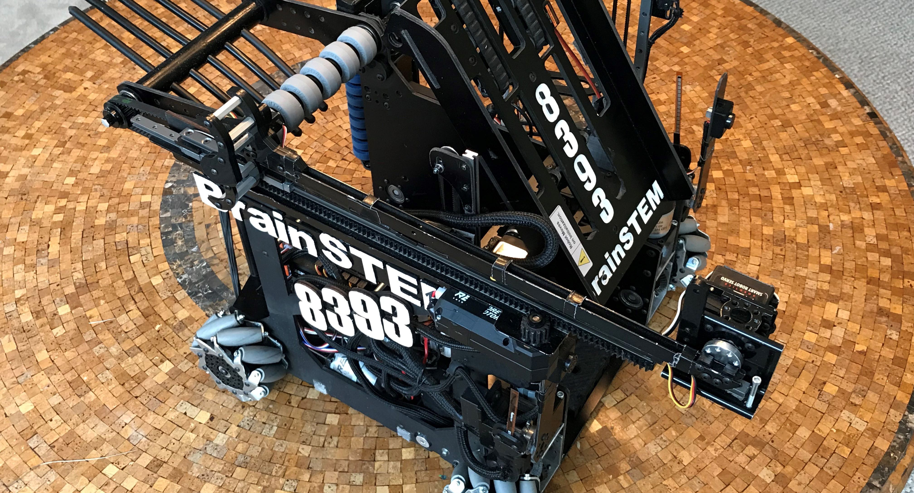

Now that you have lifted the game elements up to be scored, how do you actually go about scoring them? With a scoring mechanism! I will be the first to admit that this is the least defined of the four major mechanisms of an FTC robot. It is also generally the easiest to get right. For this page, instead of giving information on the general types of scoring mechs, we will be looking at several case studies of effective scoring mechanisms from past challenges.

Both of these images are scoring mechanisms from highly successful FTC teams. The left image is from the Relic Recovery robot of 8393 BrainSTEM. The right image is from the Skystone bot of 14320 The Antidote. I believe that both of these images represent quality scoring mechanisms for a few reasons.
Both of the scoring mechanisms shown above (the outtake tray of 8393 and the virtual four bar of 14320) are effective in moving the game pieces outside of the robot very quickly while using minimal resources. The 8393 outtake tray used one servo to make sure that the glyphs were perfectly aligned and two servos to flip the glyphs out of the robot. The 14320 virtual four bar used a single, high-torque servo to rotate stones out of the robot. Both of these mechanisms are examples of quality scoring mechs: fast, simple, and powered by minimal amounts of servos.